CODING AGENTS AS PIXEL WORLD MODELS
traex/DeepSeek-V4.1-Flash · dynamic_spatial_relationship_0035
点击播放 · 原生 RGB 像素
逐轮保存的候选
回放视频、检查图与代码变化。
每份候选均可单独播放。实际图片检查记录在下方工具轨迹中。
候选 01播放与检查图
点击播放 · 原生 RGB 像素

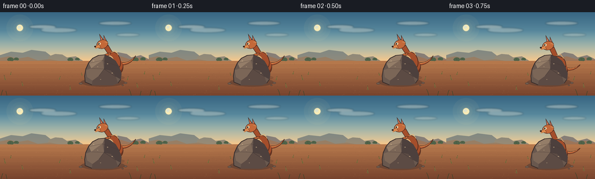
展开代码变化
--- 上一保存版本
+++ 本次保存版本
@@ -0,0 +1,606 @@
+"""Procedurally generate the kangaroo-and-boulder PixelWorld clip."""
+
+from __future__ import annotations
+
+import math
+from pathlib import Path
+
+import numpy as np
+from PIL import Image, ImageDraw, ImageFilter
+
+import artifact_io
+
+
+W, H = 256, 144
+FPS = 4
+N = 20
+SS = 4
+HORIZON = 84
+
+
+def sp(value: float) -> int:
+ return int(round(value * SS))
+
+
+def point(x: float, y: float) -> tuple[int, int]:
+ return sp(x), sp(y)
+
+
+def box(x0: float, y0: float, x1: float, y1: float) -> tuple[int, int, int, int]:
+ return sp(x0), sp(y0), sp(x1), sp(y1)
+
+
+def polygon(draw: ImageDraw.ImageDraw, points, fill, outline=None, width=0.0):
+ draw.polygon([point(x, y) for x, y in points], fill=fill, outline=outline, width=sp(width))
+
+
+def ellipse(
+ draw: ImageDraw.ImageDraw,
+ cx: float,
+ cy: float,
+ rx: float,
+ ry: float,
+ fill,
+ outline=None,
+ width=0.0,
+):
+ draw.ellipse(box(cx - rx, cy - ry, cx + rx, cy + ry), fill=fill, outline=outline, width=sp(width))
+
+
+def line(draw: ImageDraw.ImageDraw, points, fill, width=1.0):
+ draw.line([point(x, y) for x, y in points], fill=fill, width=max(1, sp(width)), joint="curve")
+
+
+def rotated_ellipse(
+ cx: float,
+ cy: float,
+ rx: float,
+ ry: float,
+ angle_deg: float,
+ count: int = 48,
+):
+ angle = math.radians(angle_deg)
+ ca, sa = math.cos(angle), math.sin(angle)
+ result = []
+ for i in range(count):
+ theta = 2.0 * math.pi * i / count
+ x, y = rx * math.cos(theta), ry * math.sin(theta)
+ result.append((cx + x * ca - y * sa, cy + x * sa + y * ca))
+ return result
+
+
+def cubic_points(p0, p1, p2, p3, count=28):
+ result = []
+ for i in range(count + 1):
+ t = i / count
+ u = 1.0 - t
+ x = u**3 * p0[0] + 3 * u**2 * t * p1[0] + 3 * u * t**2 * p2[0] + t**3 * p3[0]
+ y = u**3 * p0[1] + 3 * u**2 * t * p1[1] + 3 * u * t**2 * p2[1] + t**3 * p3[1]
+ result.append((x, y))
+ return result
+
+
+def tapered_curve(points, start_width: float, end_width: float):
+ left, right = [], []
+ for i, (x, y) in enumerate(points):
+ if i == 0:
+ dx, dy = points[1][0] - x, points[1][1] - y
+ elif i == len(points) - 1:
+ dx, dy = x - points[i - 1][0], y - points[i - 1][1]
+ else:
+ dx = points[i + 1][0] - points[i - 1][0]
+ dy = points[i + 1][1] - points[i - 1][1]
+ length = max(0.001, math.hypot(dx, dy))
+ nx, ny = -dy / length, dx / length
+ width = start_width + (end_width - start_width) * i / (len(points) - 1)
+ left.append((x + nx * width * 0.5, y + ny * width * 0.5))
+ right.append((x - nx * width * 0.5, y - ny * width * 0.5))
+ return left + list(reversed(right))
+
+
+def draw_limb(draw, start, end, width, fill, outline, bend=None):
+ if bend is None:
+ middle = ((start[0] + end[0]) * 0.5, (start[1] + end[1]) * 0.5)
+ else:
+ middle = bend
+ path = [start, middle, end]
+ line(draw, path, outline, width + 2.0)
+ line(draw, path, fill, width)
+ for x, y in (start, end):
+ ellipse(draw, x, y, width * 0.52, width * 0.52, outline)
+ ellipse(draw, x, y, width * 0.36, width * 0.36, fill)
+
+
+def make_background(frame_index: int) -> Image.Image:
+ size = (W * SS, H * SS)
+ sky_top = np.array([55, 101, 130], dtype=np.float32)
+ sky_mid = np.array([139, 190, 198], dtype=np.float32)
+ sky_horizon = np.array([246, 199, 139], dtype=np.float32)
+ y = np.linspace(0.0, 1.0, HORIZON * SS, dtype=np.float32)[:, None]
+ lower = sky_top[None, :] * (1.0 - y) + sky_mid[None, :] * y
+ upper = sky_mid[None, :] * (1.0 - y) + sky_horizon[None, :] * y
+ blend = np.clip((y - 0.38) / 0.62, 0.0, 1.0)
+ sky = lower * (1.0 - blend) + upper * blend
+ sky = np.repeat(sky[:, None, :], W * SS, axis=1).astype(np.uint8)
+
+ ground_y = np.linspace(0.0, 1.0, (H - HORIZON) * SS, dtype=np.float32)[:, None, None]
+ ground_top = np.array([184, 122, 77], dtype=np.float32)[None, None, :]
+ ground_bottom = np.array([119, 67, 45], dtype=np.float32)[None, None, :]
+ ground = ground_top * (1.0 - ground_y) + ground_bottom * ground_y
+ ground = np.repeat(ground, W * SS, axis=1).astype(np.uint8)
+
+ pixels = np.concatenate([sky, ground], axis=0)
+ image = Image.fromarray(pixels, "RGB")
+ overlay = Image.new("RGBA", size, (0, 0, 0, 0))
+ draw = ImageDraw.Draw(overlay)
+
+ # Sun and its warm atmospheric halo.
+ sun_x = 34.0
+ sun_y = 27.0
+ for radius, alpha in ((23, 12), (16, 18), (11, 28), (7.2, 50)):
+ ellipse(draw, sun_x, sun_y, radius, radius, (255, 225, 156, alpha))
+ ellipse(draw, sun_x, sun_y, 5.4, 5.4, (255, 239, 183, 245))
+ ellipse(draw, sun_x - 1.2, sun_y - 1.3, 2.8, 2.5, (255, 250, 218, 210))
+
+ # Thin, high clouds drift imperceptibly across the clip.
+ drift = frame_index * 0.18
+ cloud_specs = (
+ (73 + drift, 25, 23, 3.2, 90),
+ (101 + drift, 31, 31, 4.2, 74),
+ (198 + drift, 19, 28, 3.5, 82),
+ (220 + drift, 39, 20, 2.8, 64),
+ )
+ cloud_layer = Image.new("RGBA", size, (0, 0, 0, 0))
+ cloud_draw = ImageDraw.Draw(cloud_layer)
+ for cx, cy, rx, ry, alpha in cloud_specs:
+ ellipse(cloud_draw, cx, cy, rx, ry, (248, 239, 219, alpha))
+ ellipse(cloud_draw, cx - rx * 0.42, cy + 0.5, rx * 0.55, ry * 0.75, (252, 244, 226, alpha))
+ ellipse(cloud_draw, cx + rx * 0.35, cy + 0.4, rx * 0.5, ry * 0.68, (250, 238, 216, alpha))
+ cloud_layer = cloud_layer.filter(ImageFilter.GaussianBlur(radius=sp(1.25)))
+ overlay = Image.alpha_composite(overlay, cloud_layer)
+ draw = ImageDraw.Draw(overlay)
+
+ # Layered distant mesas and scrubby tree line.
+ polygon(
+ draw,
+ [(0, 84), (0, 74), (19, 68), (39, 70), (54, 65), (78, 68), (91, 78), (104, 84)],
+ (109, 118, 119, 190),
+ )
+ polygon(
+ draw,
+ [(82, 84), (84, 76), (95, 72), (107, 73), (115, 78), (130, 76), (143, 84)],
+ (117, 115, 108, 185),
+ )
+ polygon(
+ draw,
+ [(188, 84), (191, 75), (203, 69), (218, 72), (226, 78), (242, 74), (256, 81), (256, 84)],
+ (111, 105, 107, 195),
+ )
+ polygon(
+ draw,
+ [(0, 84), (0, 79), (15, 76), (30, 80), (48, 77), (65, 83), (85, 81), (101, 84)],
+ (135, 111, 90, 210),
+ )
+ polygon(
+ draw,
+ [(162, 84), (177, 78), (192, 80), (207, 76), (223, 81), (239, 78), (256, 82), (256, 84)],
+ (141, 102, 79, 215),
+ )
+
+ # Distant shrubs.
+ shrub_color = (67, 91, 67, 235)
+ for base_x, base_y, scale in (
+ (18, 83, 0.85),
+ (28, 82, 0.65),
+ (121, 83, 0.75),
+ (133, 82, 0.6),
+ (233, 83, 0.85),
+ (246, 82, 0.7),
+ ):
+ ellipse(draw, base_x, base_y - 2.4 * scale, 6.0 * scale, 3.5 * scale, shrub_color)
+ ellipse(draw, base_x - 3.5 * scale, base_y - 1.5 * scale, 3.3 * scale, 2.7 * scale, shrub_color)
+ ellipse(draw, base_x + 3.2 * scale, base_y - 1.0 * scale, 3.4 * scale, 2.5 * scale, shrub_color)
+ line(draw, [(base_x, base_y), (base_x - 1.0, base_y - 5.0 * scale)], (61, 77, 58, 235), 0.8)
+
+ image = Image.alpha_composite(image.convert("RGBA"), overlay).convert("RGB")
+ draw = ImageDraw.Draw(image, "RGBA")
+
+ # Soil bands and dry grass anchors.
+ for row, alpha in ((88, 30), (95, 28), (103, 25), (113, 22), (125, 18), (138, 14)):
+ line(draw, [(0, row), (W, row + 0.7)], (249, 190, 122, alpha), 0.8)
+ for row, alpha in ((91, 24), (108, 22), (122, 16)):
+ line(draw, [(0, row), (W, row - 0.5)], (82, 47, 38, alpha), 0.7)
+
+ rng = np.random.default_rng(1407)
+ for _ in range(330):
+ x = float(rng.uniform(0, W))
+ y = float(rng.uniform(HORIZON + 2, H))
+ length = float(rng.uniform(0.25, 1.25))
+ alpha = int(rng.uniform(18, 50))
+ color = (244, 184, 113, alpha) if rng.random() > 0.42 else (76, 47, 39, alpha)
+ line(draw, [(x, y), (x + length, y + 0.2)], color, 0.45)
+
+ grass_color = (76, 82, 49, 225)
+ grass_light = (133, 121, 64, 210)
+ for gx, gy, height, lean in (
+ (9, 117, 8.5, -2.0),
+ (18, 108, 5.0, 1.3),
+ (39, 127, 7.2, -1.8),
+ (102, 116, 5.5, 1.5),
+ (121, 134, 7.5, -1.0),
+ (141, 109, 4.5, -1.0),
+ (219, 117, 6.5, 1.8),
+ (237, 130, 8.0, -1.5),
+ (248, 107, 4.8, 1.2),
+ ):
+ sway = 0.25 * math.sin(frame_index * 0.48 + gx)
+ for offset, factor in ((-0.9, 0.78), (0.0, 1.0), (0.9, 0.72)):
+ line(
+ draw,
+ [(gx + offset, gy), (gx + lean * factor + sway, gy - height * factor)],
+ grass_color if factor > 0.8 else grass_light,
+ 0.7,
+ )
+
+ return image
+
+
+def draw_kangaroo(frame: Image.Image, cx: float, cy: float, scale: float, pose: str, angle: float):
+ sprite_size = 220
+ sprite = Image.new("RGBA", (sprite_size * SS, sprite_size * SS), (0, 0, 0, 0))
+ draw = ImageDraw.Draw(sprite)
+ ox = oy = sprite_size * 0.5
+
+ def lp(x, y):
+ return (ox + x * scale) * SS, (oy + y * scale) * SS
+
+ def lbox(x0, y0, x1, y1):
+ return sp(ox + x0 * scale), sp(oy + y0 * scale), sp(ox + x1 * scale), sp(oy + y1 * scale)
+
+ def lell(cx0, cy0, rx, ry, fill, outline=None, width=0.0):
+ draw.ellipse(
+ lbox(cx0 - rx, cy0 - ry, cx0 + rx, cy0 + ry),
+ fill=fill,
+ outline=outline,
+ width=max(0, sp(width * scale)),
+ )
+
+ def lpoly(points, fill, outline=None, width=0.0):
+ draw.polygon([lp(x, y) for x, y in points], fill=fill, outline=outline, width=max(0, sp(width * scale)))
+
+ def lline(points, fill, width):
+ draw.line([lp(x, y) for x, y in points], fill=fill, width=max(1, sp(width * scale)), joint="curve")
+
+ def llimb(start, end, width, fill, outline, bend=None):
+ middle = bend or ((start[0] + end[0]) * 0.5, (start[1] + end[1]) * 0.5)
+ path = [start, middle, end]
+ lline(path, outline, width + 2.2)
+ lline(path, fill, width)
+ for x, y in (start, end):
+ lell(x, y, width * 0.58, width * 0.58, outline)
+ lell(x, y, width * 0.4, width * 0.4, fill)
+
+ outline = (65, 37, 29, 255)
+ fur_dark = (111, 53, 33, 255)
+ fur_mid = (164, 78, 43, 255)
+ fur_light = (196, 105, 57, 255)
+ fur_hi = (221, 137, 77, 255)
+ belly = (229, 183, 125, 255)
+ belly_shadow = (207, 150, 98, 255)
+ ear_inner = (210, 126, 99, 255)
+ eye_white = (239, 217, 174, 255)
+
+ crouch = pose in ("crouch", "land")
+ flight = pose in ("takeoff", "flight", "descend")
+ descent = pose == "descend"
+
+ body_y = 3.5 if crouch else 0.0
+ body_rx = 17.5 if not crouch else 19.0
+ body_ry = 23.0 if not crouch else 20.0
+ if flight:
+ body_rx, body_ry = 18.0, 25.5
+
+ # Tail, with a wide muscular root and a fine tip.
+ if flight:
+ tail_center = cubic_points((13, -3 + body_y), (31, -16), (47, -30), (57, -43), 32)
+ elif crouch:
+ tail_center = cubic_points((12, 6), (29, 12), (42, 7), (51, -3), 32)
+ else:
+ tail_center = cubic_points((13, 1), (31, 4), (44, -4), (52, -17), 32)
+ tail_poly = tapered_curve(tail_center, 8.0, 1.4)
+ lpoly(tail_poly, fur_mid, outline, 1.05)
+ inner_tail = tapered_curve([(x, y - 1.0) for x, y in tail_center[4:-7]], 2.2, 0.45)
+ lpoly(inner_tail, fur_hi, None, 0.0)
+
+ # Far forelimb.
+ if flight:
+ llimb((-10, -19 + body_y), (-27, -16 + body_y), 4.0, fur_dark, outline, (-20, -24 + body_y))
+ else:
+ llimb((-10, -20 + body_y), (-23, -8 + body_y), 4.1, fur_dark, outline, (-19, -17 + body_y))
+
+ # Powerful hind haunch and long foot.
+ lell(8, 9 + body_y, 15.5, 18.0, fur_dark, outline, 1.1)
+ lell(10, 5 + body_y, 12.0, 13.5, fur_mid, None)
+ if flight:
+ foot_start = (14, 19 + body_y)
+ foot_end = (38, 24 - (4 if descent else 0) + body_y)
+ llimb(foot_start, foot_end, 7.0, fur_mid, outline, (28, 17 + body_y))
+ lpoly([(31, 20 + body_y), (47, 25 + body_y), (43, 29 + body_y), (29, 26 + body_y)], fur_dark, outline, 0.9)
+ elif crouch:
+ llimb((10, 16 + body_y), (-20, 31 + body_y), 7.2, fur_mid, outline, (1, 25 + body_y))
+ lpoly([(-19, 27 + body_y), (-33, 31 + body_y), (-34, 35 + body_y), (-17, 35 + body_y)], fur_dark, outline, 0.9)
+ else:
+ llimb((10, 16 + body_y), (-15, 30 + body_y), 7.0, fur_mid, outline, (0, 24 + body_y))
+ lpoly([(-14, 27 + body_y), (-31, 31 + body_y), (-33, 35 + body_y), (-13, 35 + body_y)], fur_dark, outline, 0.9)
+
+ # Main body and cream belly.
+ body_points = rotated_ellipse(0, -4 + body_y, body_rx, body_ry, -12 if not flight else -18, 52)
+ lpoly(body_points, fur_mid, outline, 1.2)
+ belly_points = rotated_ellipse(-7.2, -2 + body_y, 10.2, 16.4, -12 if not flight else -17, 44)
+ lpoly(belly_points, belly, None, 0.0)
+ lpoly(rotated_ellipse(-10.0, 4 + body_y, 5.2, 9.5, -16, 36), belly_shadow, None, 0.0)
+
+ # Neck and head.
+ neck_shift = -3.0 if crouch else 0.0
+ neck = [
+ (-11, -20 + body_y),
+ (-21, -35 + body_y + neck_shift),
+ (-11, -42 + body_y + neck_shift),
+ (-1, -25 + body_y),
+ ]
+ lpoly(neck, fur_mid, outline, 1.1)
+
+ head_cx = -24.5
+ head_cy = -43.5 + body_y + neck_shift
+ if flight:
+ head_cy -= 1.0
+ # Ears behind the head.
+ lpoly(
+ [
+ (head_cx - 3, head_cy - 6),
+ (head_cx - 7, head_cy - 24),
+ (head_cx + 3, head_cy - 10),
+ ],
+ fur_mid,
+ outline,
+ 1.0,
+ )
+ lpoly(
+ [
+ (head_cx - 2.5, head_cy - 8),
+ (head_cx - 5.0, head_cy - 20),
+ (head_cx + 0.4, head_cy - 10),
+ ],
+ ear_inner,
+ None,
+ 0.0,
+ )
+ lpoly(
+ [
+ (head_cx + 4, head_cy - 5),
+ (head_cx + 3, head_cy - 21),
+ (head_cx + 10, head_cy - 8),
+ ],
+ fur_dark,
+ outline,
+ 1.0,
+ )
+ lpoly(
+ [
+ (head_cx + 4.7, head_cy - 7),
+ (head_cx + 4.6, head_cy - 17),
+ (head_cx + 8.1, head_cy - 9),
+ ],
+ ear_inner,
+ None,
+ 0.0,
+ )
+
+ lpoly(rotated_ellipse(head_cx, head_cy, 13.5, 10.3, -18, 44), fur_light, outline, 1.15)
+ # Muzzle, nose, eye, and cheek shading.
+ lpoly(
+ [
+ (head_cx - 7, head_cy + 1),
+ (head_cx - 18, head_cy + 4),
+ (head_cx - 15, head_cy + 9),
+ (head_cx - 3, head_cy + 8),
+ ],
+ fur_hi,
+ outline,
+ 0.8,
+ )
+ lell(head_cx - 16.6, head_cy + 5.4, 2.2, 1.6, (42, 29, 25, 255), outline, 0.45)
+ lell(head_cx - 7.0, head_cy - 1.5, 3.1, 2.8, eye_white)
+ lell(head_cx - 8.0, head_cy - 1.4, 1.45, 1.8, (33, 28, 24, 255))
+ lell(head_cx - 8.45, head_cy - 2.1, 0.45, 0.45, (244, 229, 193, 255))
+ lpoly([(head_cx - 18, head_cy + 8), (head_cx - 12, head_cy + 9), (head_cx - 15, head_cy + 11)], belly_shadow, None, 0.0)
+
+ # Near forelimb.
+ if flight:
+ llimb((-8, -20 + body_y), (-24, -21 + body_y), 4.7, fur_light, outline, (-18, -29 + body_y))
+ lell(-24, -21 + body_y, 2.1, 1.6, fur_dark, outline, 0.55)
+ else:
+ llimb((-9, -21 + body_y), (-20, -9 + body_y), 4.6, fur_light, outline, (-17, -18 + body_y))
+ lell(-20, -9 + body_y, 2.0, 1.6, fur_dark, outline, 0.55)
+
+ # Subtle rim light along the back.
+ lline([(-4, -25 + body_y), (5, -28 + body_y), (12, -19 + body_y)], (244, 174, 99, 210), 1.25)
+ lline([(-19, -49 + body_y + neck_shift), (-11, -47 + body_y + neck_shift)], (244, 177, 103, 170), 0.9)
+
+ rotated = sprite.rotate(angle, resample=Image.Resampling.BICUBIC, expand=True)
+ paste_x = sp(cx) - rotated.width // 2
+ paste_y = sp(cy) - rotated.height // 2
+ frame_rgba = frame.convert("RGBA")
+ frame_rgba.alpha_composite(rotated, (paste_x, paste_y))
+ frame.paste(frame_rgba.convert("RGB"))
+
+
+def draw_rock(frame: Image.Image):
+ draw = ImageDraw.Draw(frame, "RGBA")
+ outline = (53, 43, 42, 255)
+ shadow = (67, 51, 47, 110)
+ base = (105, 88, 78, 255)
+ light = (148, 125, 104, 255)
+ mid = (123, 102, 87, 255)
+ dark = (77, 64, 61, 255)
+
+ ellipse(draw, 177, 121, 38, 7.5, shadow)
+ shape = [
+ (146, 121),
+ (145, 110),
+ (147, 98),
+ (152, 87),
+ (159, 79),
+ (169, 74),
+ (180, 73),
+ (190, 77),
+ (199, 84),
+ (205, 94),
+ (209, 106),
+ (208, 116),
+ (203, 123),
+ (194, 126),
+ (158, 126),
+ ]
+ polygon(draw, shape, base, outline, 1.35)
+
+ polygon(draw, [(153, 88), (160, 80), (170, 75), (180, 74), (176, 83), (166, 90), (157, 97)], light)
+ polygon(draw, [(148, 100), (157, 97), (166, 90), (176, 83), (179, 98), (170, 110), (159, 118), (150, 112)], mid)
+ polygon(draw, [(180, 74), (190, 77), (199, 84), (205, 94), (209, 106), (208, 116), (199, 111), (190, 100), (179, 98)], dark)
+ polygon(draw, [(159, 118), (170, 110), (179, 98), (190, 100), (199, 111), (203, 123), (194, 126), (158, 126)], (92, 75, 68, 255))
+
+ # Facet seams and a few pale mineral chips.
+ line(draw, [(153, 88), (176, 83), (205, 94)], (70, 55, 51, 135), 0.8)
+ line(draw, [(157, 97), (179, 98), (199, 111)], (62, 50, 48, 145), 0.75)
+ line(draw, [(170, 110), (179, 98), (190, 100)], (55, 47, 46, 120), 0.7)
+ for x, y, r in ((161, 84, 1.2), (168, 94, 0.8), (185, 89, 1.0), (193, 105, 1.2), (173, 116, 0.7)):
+ ellipse(draw, x, y, r, r * 0.65, (192, 166, 132, 175))
+
+ # Pebbles at the base.
+ for x, y, rx, ry in ((139, 123, 3.2, 1.8), (216, 122, 2.8, 1.6), (211, 126, 1.8, 1.1)):
+ ellipse(draw, x, y, rx, ry, (113, 91, 77, 255), (63, 50, 46, 220), 0.55)
+
+
+def draw_dust(frame: Image.Image, frame_index: int):
+ draw = ImageDraw.Draw(frame, "RGBA")
+ if 3 <= frame_index <= 8:
+ age = frame_index - 3
+ alpha = int(max(18, 115 - age * 14))
+ center_x = 190 - age * 4.3
+ center_y = 111 + age * 0.7
+ for i, (dx, dy, radius) in enumerate(
+ ((-9, 2, 5.2), (-4, -2, 4.0), (1, 3, 4.5), (7, -1, 3.2), (11, 4, 2.5))
+ ):
+ ellipse(
+ draw,
+ center_x + dx - age * 0.8,
+ center_y + dy,
+ radius + age * 0.35,
+ (radius + age * 0.35) * 0.65,
+ (219, 163, 105, max(10, alpha - i * 5)),
+ )
+ if 11 <= frame_index <= 18:
+ age = frame_index - 11
+ alpha = int(max(15, 100 - age * 8))
+ center_x = 66 - age * 1.5
+ center_y = 108
+ for i, (dx, dy, radius) in enumerate(((-8, 1, 4.5), (-4, -2, 3.8), (2, 2, 5.0), (7, 0, 3.0))):
+ ellipse(
+ draw,
+ center_x + dx - age * 0.7,
+ center_y + dy,
+ radius + age * 0.45,
+ (radius + age * 0.45) * 0.7,
+ (226, 171, 111, max(9, alpha - i * 7)),
+ )
+
+
+def frame_state(index: int):
+ if index <= 2:
+ return 194.5, 88.0, "alert", 0.0
+ if index == 3:
+ return 192.0, 91.0, "crouch", -3.0
+ if index == 4:
+ return 189.0, 78.0, "takeoff", -13.0
+ if index == 5:
+ return 183.0, 62.0, "takeoff", -17.0
+ if index == 6:
+ return 175.0, 49.0, "flight", -15.0
+ if index == 7:
+ return 164.0, 38.0, "flight", -10.0
+ if index == 8:
+ return 151.0, 32.0, "flight", -6.0
+ if index == 9:
+ return 137.0, 31.0, "flight", -2.0
+ if index == 10:
+ return 122.0, 36.0, "flight", 3.0
+ if index == 11:
+ return 108.0, 45.0, "descend", 8.0
+ if index == 12:
+ return 95.0, 57.0, "descend", 10.0
+ if index == 13:
+ return 83.0, 70.0, "descend", 9.0
+ if index == 14:
+ return 73.0, 82.0, "land", 5.0
+ if index == 15:
+ return 65.0, 89.0, "land", 1.0
+ if index == 16:
+ return 60.0, 91.0, "land", -1.0
+ if index == 17:
+ return 58.0, 89.0, "alert", -1.0
+ return 58.0, 88.0, "alert", 0.0
+
+
+def render_frame(index: int) -> np.ndarray:
+ image = make_background(index)
+ draw = ImageDraw.Draw(image, "RGBA")
+ cx, cy, pose, angle = frame_state(index)
+
+ # Ground shadow: tight and dark on takeoff/landing, broad and pale in flight.
+ if index <= 3:
+ shadow_alpha, shadow_width = 55, 21
+ elif index <= 13:
+ height = max(0.0, 89.0 - cy)
+ shadow_alpha = int(max(18, 52 - height * 0.45))
+ shadow_width = 18 + height * 0.2
+ else:
+ shadow_alpha, shadow_width = 68, 24
+ ellipse(
+ draw,
+ cx - 1.0,
+ 113.0,
+ shadow_width,
+ max(2.2, shadow_width * 0.2),
+ (71, 44, 35, shadow_alpha),
+ )
+
+ # Faint horizontal speed marks while the animal is airborne.
+ if 5 <= index <= 12:
+ alpha = 34 if index in (5, 6, 11, 12) else 22
+ for dx, dy, length in ((31, -18, 12), (38, -9, 9), (34, 5, 7)):
+ x0 = cx + dx
+ y0 = cy + dy
+ line(draw, [(x0, y0), (x0 + length, y0 - 0.5)], (250, 223, 175, alpha), 0.65)
+
+ draw_kangaroo(image, cx, cy, 0.75, pose, angle)
+ draw_dust(image, index)
+ draw_rock(image)
+
+ # A few foreground grass blades frame the bottom edge without covering the subject.
+ draw = ImageDraw.Draw(image, "RGBA")
+ for gx, gy, h, lean in ((2, 144, 10, 3), (12, 144, 8, -2), (226, 144, 11, -4), (241, 144, 8, 2)):
+ line(draw, [(gx, gy), (gx + lean * 0.45, gy - h * 0.58), (gx + lean, gy - h)], (66, 68, 43, 230), 0.9)
+
+ downsampled = image.resize((W, H), Image.Resampling.LANCZOS)
+ return np.asarray(downsampled, dtype=np.uint8)
+
+
+def main():
+ case_dir = Path(__file__).resolve().parent
+ frames = np.stack([render_frame(i) for i in range(N)])
+ artifact_io.save(frames, case_dir)
+ print(f"saved {N} frames to {case_dir}")
+
+
+if __name__ == "__main__":
+ main()
候选 02播放与检查图
点击播放 · 原生 RGB 像素
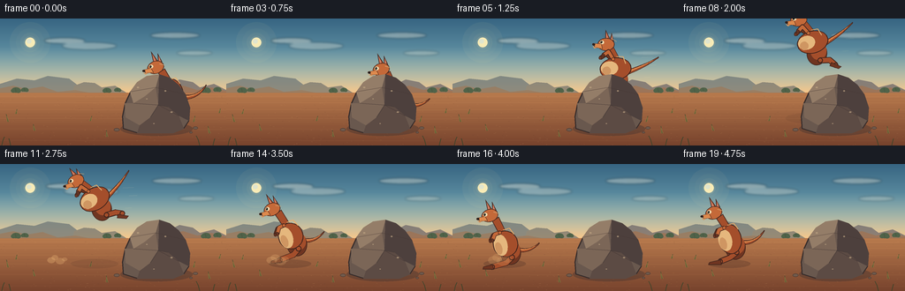
展开代码变化
--- 上一保存版本
+++ 本次保存版本
@@ -130,7 +130,7 @@
ground = np.repeat(ground, W * SS, axis=1).astype(np.uint8)
pixels = np.concatenate([sky, ground], axis=0)
- image = Image.fromarray(pixels, "RGB")
+ image = Image.fromarray(pixels)
overlay = Image.new("RGBA", size, (0, 0, 0, 0))
draw = ImageDraw.Draw(overlay)
@@ -297,8 +297,10 @@
body_y = 3.5 if crouch else 0.0
body_rx = 17.5 if not crouch else 19.0
body_ry = 23.0 if not crouch else 20.0
+ body_cy = -4.0 + body_y
if flight:
- body_rx, body_ry = 18.0, 25.5
+ body_rx, body_ry = 24.0, 17.0
+ body_cy = -7.0
# Tail, with a wide muscular root and a fine tip.
if flight:
@@ -334,31 +336,46 @@
lpoly([(-14, 27 + body_y), (-31, 31 + body_y), (-33, 35 + body_y), (-13, 35 + body_y)], fur_dark, outline, 0.9)
# Main body and cream belly.
- body_points = rotated_ellipse(0, -4 + body_y, body_rx, body_ry, -12 if not flight else -18, 52)
+ body_points = rotated_ellipse(0, body_cy, body_rx, body_ry, -12 if not flight else -22, 52)
lpoly(body_points, fur_mid, outline, 1.2)
- belly_points = rotated_ellipse(-7.2, -2 + body_y, 10.2, 16.4, -12 if not flight else -17, 44)
+ belly_points = rotated_ellipse(
+ -9.0 if flight else -7.2,
+ body_cy + 2.0,
+ 13.0 if flight else 10.2,
+ 10.5 if flight else 16.4,
+ -22 if flight else -12,
+ 44,
+ )
lpoly(belly_points, belly, None, 0.0)
- lpoly(rotated_ellipse(-10.0, 4 + body_y, 5.2, 9.5, -16, 36), belly_shadow, None, 0.0)
+ lpoly(
+ rotated_ellipse(-12.0 if flight else -10.0, body_cy + 7.0, 6.4 if flight else 5.2, 6.5 if flight else 9.5, -20 if flight else -16, 36),
+ belly_shadow,
+ None,
+ 0.0,
+ )
# Neck and head.
neck_shift = -3.0 if crouch else 0.0
- neck = [
- (-11, -20 + body_y),
- (-21, -35 + body_y + neck_shift),
- (-11, -42 + body_y + neck_shift),
- (-1, -25 + body_y),
- ]
+ if flight:
+ neck = [(-12, -20), (-23, -31), (-13, -38), (0, -25)]
+ else:
+ neck = [
+ (-11, -20 + body_y),
+ (-21, -35 + body_y + neck_shift),
+ (-11, -42 + body_y + neck_shift),
+ (-1, -25 + body_y),
+ ]
lpoly(neck, fur_mid, outline, 1.1)
head_cx = -24.5
- head_cy = -43.5 + body_y + neck_shift
+ head_cy = -37.0 if flight else -43.5 + body_y + neck_shift
if flight:
head_cy -= 1.0
# Ears behind the head.
lpoly(
[
(head_cx - 3, head_cy - 6),
- (head_cx - 7, head_cy - 24),
+ (head_cx - 7, head_cy - 21 if flight else head_cy - 24),
(head_cx + 3, head_cy - 10),
],
fur_mid,
@@ -368,7 +385,7 @@
lpoly(
[
(head_cx - 2.5, head_cy - 8),
- (head_cx - 5.0, head_cy - 20),
+ (head_cx - 5.0, head_cy - 18 if flight else head_cy - 20),
(head_cx + 0.4, head_cy - 10),
],
ear_inner,
@@ -378,7 +395,7 @@
lpoly(
[
(head_cx + 4, head_cy - 5),
- (head_cx + 3, head_cy - 21),
+ (head_cx + 3, head_cy - 19 if flight else head_cy - 21),
(head_cx + 10, head_cy - 8),
],
fur_dark,
@@ -388,7 +405,7 @@
lpoly(
[
(head_cx + 4.7, head_cy - 7),
- (head_cx + 4.6, head_cy - 17),
+ (head_cx + 4.6, head_cy - 16 if flight else head_cy - 17),
(head_cx + 8.1, head_cy - 9),
],
ear_inner,
@@ -396,12 +413,12 @@
0.0,
)
- lpoly(rotated_ellipse(head_cx, head_cy, 13.5, 10.3, -18, 44), fur_light, outline, 1.15)
+ lpoly(rotated_ellipse(head_cx, head_cy, 12.8, 9.7, -18, 44), fur_light, outline, 1.15)
# Muzzle, nose, eye, and cheek shading.
lpoly(
[
(head_cx - 7, head_cy + 1),
- (head_cx - 18, head_cy + 4),
+ (head_cx - 19.5, head_cy + 4),
(head_cx - 15, head_cy + 9),
(head_cx - 3, head_cy + 8),
],
@@ -409,11 +426,11 @@
outline,
0.8,
)
- lell(head_cx - 16.6, head_cy + 5.4, 2.2, 1.6, (42, 29, 25, 255), outline, 0.45)
+ lell(head_cx - 18.0, head_cy + 5.4, 2.2, 1.6, (42, 29, 25, 255), outline, 0.45)
lell(head_cx - 7.0, head_cy - 1.5, 3.1, 2.8, eye_white)
lell(head_cx - 8.0, head_cy - 1.4, 1.45, 1.8, (33, 28, 24, 255))
lell(head_cx - 8.45, head_cy - 2.1, 0.45, 0.45, (244, 229, 193, 255))
- lpoly([(head_cx - 18, head_cy + 8), (head_cx - 12, head_cy + 9), (head_cx - 15, head_cy + 11)], belly_shadow, None, 0.0)
+ lpoly([(head_cx - 19, head_cy + 8), (head_cx - 12, head_cy + 9), (head_cx - 15, head_cy + 11)], belly_shadow, None, 0.0)
# Near forelimb.
if flight:
@@ -444,40 +461,40 @@
mid = (123, 102, 87, 255)
dark = (77, 64, 61, 255)
- ellipse(draw, 177, 121, 38, 7.5, shadow)
+ ellipse(draw, 177, 125, 41, 8.0, shadow)
shape = [
- (146, 121),
- (145, 110),
- (147, 98),
- (152, 87),
- (159, 79),
- (169, 74),
- (180, 73),
- (190, 77),
- (199, 84),
- (205, 94),
- (209, 106),
- (208, 116),
- (203, 123),
- (194, 126),
- (158, 126),
+ (139, 125),
+ (138, 111),
+ (141, 96),
+ (147, 83),
+ (155, 72),
+ (166, 65),
+ (180, 63),
+ (192, 67),
+ (202, 75),
+ (210, 86),
+ (215, 101),
+ (214, 116),
+ (208, 125),
+ (196, 130),
+ (155, 130),
]
polygon(draw, shape, base, outline, 1.35)
- polygon(draw, [(153, 88), (160, 80), (170, 75), (180, 74), (176, 83), (166, 90), (157, 97)], light)
- polygon(draw, [(148, 100), (157, 97), (166, 90), (176, 83), (179, 98), (170, 110), (159, 118), (150, 112)], mid)
- polygon(draw, [(180, 74), (190, 77), (199, 84), (205, 94), (209, 106), (208, 116), (199, 111), (190, 100), (179, 98)], dark)
- polygon(draw, [(159, 118), (170, 110), (179, 98), (190, 100), (199, 111), (203, 123), (194, 126), (158, 126)], (92, 75, 68, 255))
+ polygon(draw, [(147, 83), (155, 72), (166, 65), (180, 63), (176, 78), (164, 88), (151, 96)], light)
+ polygon(draw, [(141, 96), (151, 96), (164, 88), (176, 78), (179, 98), (170, 112), (158, 121), (142, 112)], mid)
+ polygon(draw, [(180, 63), (192, 67), (202, 75), (210, 86), (215, 101), (214, 116), (202, 110), (190, 100), (179, 98)], dark)
+ polygon(draw, [(158, 121), (170, 112), (179, 98), (190, 100), (202, 110), (208, 125), (196, 130), (155, 130)], (92, 75, 68, 255))
# Facet seams and a few pale mineral chips.
- line(draw, [(153, 88), (176, 83), (205, 94)], (70, 55, 51, 135), 0.8)
- line(draw, [(157, 97), (179, 98), (199, 111)], (62, 50, 48, 145), 0.75)
- line(draw, [(170, 110), (179, 98), (190, 100)], (55, 47, 46, 120), 0.7)
- for x, y, r in ((161, 84, 1.2), (168, 94, 0.8), (185, 89, 1.0), (193, 105, 1.2), (173, 116, 0.7)):
+ line(draw, [(147, 83), (176, 78), (210, 86)], (70, 55, 51, 135), 0.8)
+ line(draw, [(151, 96), (179, 98), (202, 110)], (62, 50, 48, 145), 0.75)
+ line(draw, [(170, 112), (179, 98), (190, 100)], (55, 47, 46, 120), 0.7)
+ for x, y, r in ((156, 78, 1.2), (166, 91, 0.8), (187, 82, 1.0), (194, 106, 1.2), (174, 119, 0.7)):
ellipse(draw, x, y, r, r * 0.65, (192, 166, 132, 175))
# Pebbles at the base.
- for x, y, rx, ry in ((139, 123, 3.2, 1.8), (216, 122, 2.8, 1.6), (211, 126, 1.8, 1.1)):
+ for x, y, rx, ry in ((132, 126, 3.2, 1.8), (221, 124, 2.8, 1.6), (216, 129, 1.8, 1.1)):
ellipse(draw, x, y, rx, ry, (113, 91, 77, 255), (63, 50, 46, 220), 0.55)
候选 03播放与检查图
点击播放 · 原生 RGB 像素
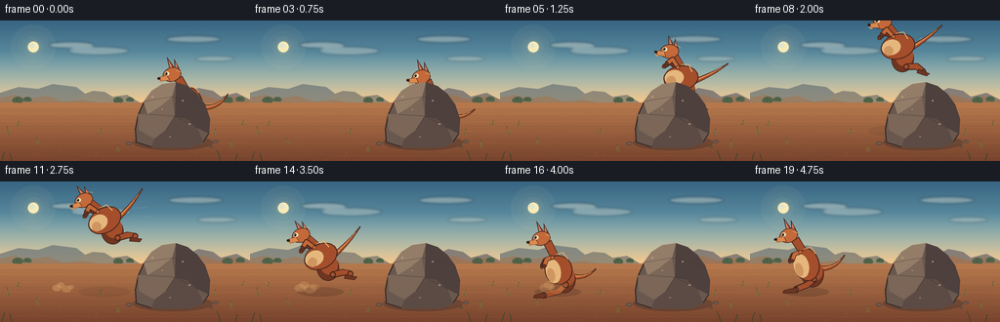
展开代码变化
--- 上一保存版本
+++ 本次保存版本
@@ -291,22 +291,29 @@
eye_white = (239, 217, 174, 255)
crouch = pose in ("crouch", "land")
+ compact = pose == "compact"
flight = pose in ("takeoff", "flight", "descend")
descent = pose == "descend"
body_y = 3.5 if crouch else 0.0
body_rx = 17.5 if not crouch else 19.0
body_ry = 23.0 if not crouch else 20.0
+ if compact:
+ body_rx, body_ry = 21.0, 19.0
body_cy = -4.0 + body_y
if flight:
body_rx, body_ry = 24.0, 17.0
body_cy = -7.0
+ elif compact:
+ body_cy = -6.0
# Tail, with a wide muscular root and a fine tip.
if flight:
tail_center = cubic_points((13, -3 + body_y), (31, -16), (47, -30), (57, -43), 32)
elif crouch:
tail_center = cubic_points((12, 6), (29, 12), (42, 7), (51, -3), 32)
+ elif compact:
+ tail_center = cubic_points((13, 3), (31, -4), (44, -14), (54, -26), 32)
else:
tail_center = cubic_points((13, 1), (31, 4), (44, -4), (52, -17), 32)
tail_poly = tapered_curve(tail_center, 8.0, 1.4)
@@ -317,6 +324,8 @@
# Far forelimb.
if flight:
llimb((-10, -19 + body_y), (-27, -16 + body_y), 4.0, fur_dark, outline, (-20, -24 + body_y))
+ elif compact:
+ llimb((-10, -18), (-24, -15), 4.0, fur_dark, outline, (-19, -22))
else:
llimb((-10, -20 + body_y), (-23, -8 + body_y), 4.1, fur_dark, outline, (-19, -17 + body_y))
@@ -328,6 +337,9 @@
foot_end = (38, 24 - (4 if descent else 0) + body_y)
llimb(foot_start, foot_end, 7.0, fur_mid, outline, (28, 17 + body_y))
lpoly([(31, 20 + body_y), (47, 25 + body_y), (43, 29 + body_y), (29, 26 + body_y)], fur_dark, outline, 0.9)
+ elif compact:
+ llimb((11, 14), (35, 21), 7.0, fur_mid, outline, (27, 15))
+ lpoly([(29, 18), (45, 23), (41, 27), (28, 24)], fur_dark, outline, 0.9)
elif crouch:
llimb((10, 16 + body_y), (-20, 31 + body_y), 7.2, fur_mid, outline, (1, 25 + body_y))
lpoly([(-19, 27 + body_y), (-33, 31 + body_y), (-34, 35 + body_y), (-17, 35 + body_y)], fur_dark, outline, 0.9)
@@ -336,14 +348,15 @@
lpoly([(-14, 27 + body_y), (-31, 31 + body_y), (-33, 35 + body_y), (-13, 35 + body_y)], fur_dark, outline, 0.9)
# Main body and cream belly.
- body_points = rotated_ellipse(0, body_cy, body_rx, body_ry, -12 if not flight else -22, 52)
+ body_angle = -22 if flight else (-17 if compact else -12)
+ body_points = rotated_ellipse(0, body_cy, body_rx, body_ry, body_angle, 52)
lpoly(body_points, fur_mid, outline, 1.2)
belly_points = rotated_ellipse(
-9.0 if flight else -7.2,
body_cy + 2.0,
13.0 if flight else 10.2,
10.5 if flight else 16.4,
- -22 if flight else -12,
+ body_angle,
44,
)
lpoly(belly_points, belly, None, 0.0)
@@ -358,6 +371,8 @@
neck_shift = -3.0 if crouch else 0.0
if flight:
neck = [(-12, -20), (-23, -31), (-13, -38), (0, -25)]
+ elif compact:
+ neck = [(-12, -19), (-22, -32), (-12, -38), (0, -23)]
else:
neck = [
(-11, -20 + body_y),
@@ -368,7 +383,7 @@
lpoly(neck, fur_mid, outline, 1.1)
head_cx = -24.5
- head_cy = -37.0 if flight else -43.5 + body_y + neck_shift
+ head_cy = -37.0 if flight else (-39.0 if compact else -43.5 + body_y + neck_shift)
if flight:
head_cy -= 1.0
# Ears behind the head.
@@ -436,6 +451,9 @@
if flight:
llimb((-8, -20 + body_y), (-24, -21 + body_y), 4.7, fur_light, outline, (-18, -29 + body_y))
lell(-24, -21 + body_y, 2.1, 1.6, fur_dark, outline, 0.55)
+ elif compact:
+ llimb((-8, -19), (-24, -19), 4.6, fur_light, outline, (-17, -27))
+ lell(-24, -19, 2.0, 1.6, fur_dark, outline, 0.55)
else:
llimb((-9, -21 + body_y), (-20, -9 + body_y), 4.6, fur_light, outline, (-17, -18 + body_y))
lell(-20, -9 + body_y, 2.0, 1.6, fur_dark, outline, 0.55)
@@ -538,9 +556,9 @@
if index == 3:
return 192.0, 91.0, "crouch", -3.0
if index == 4:
- return 189.0, 78.0, "takeoff", -13.0
+ return 190.0, 81.0, "compact", -8.0
if index == 5:
- return 183.0, 62.0, "takeoff", -17.0
+ return 184.0, 64.0, "takeoff", -15.0
if index == 6:
return 175.0, 49.0, "flight", -15.0
if index == 7:
@@ -558,7 +576,7 @@
if index == 13:
return 83.0, 70.0, "descend", 9.0
if index == 14:
- return 73.0, 82.0, "land", 5.0
+ return 73.0, 82.0, "descend", 5.0
if index == 15:
return 65.0, 89.0, "land", 1.0
if index == 16:
可观测工具轨迹
实际执行的命令与返回图片。
命令 1exit 0
/bin/bash -c "pwd && rg --files -g 'prompt.txt' -g 'GENERATION_RULES.md' -g 'task_spec.json' -g '"'!node_modules'"' -g '"'!venv'"'"
命令 2exit 0
/bin/bash -c "find . -maxdepth 2 -type f | sort | sed -n '1,200p'"
命令 3exit 0
/bin/bash -c 'git status --short --branch 2>/dev/null || true'
命令 4exit 0
/bin/bash -c 'cat prompt.txt'
命令 5exit 0
/bin/bash -c 'cat GENERATION_RULES.md'
命令 6exit 0
/bin/bash -c 'cat task_spec.json'
命令 7exit 0
/bin/bash -c "sed -n '1,260p' artifact_io.py && sed -n '1,200p' player_template.html"
命令 8exit 0
/bin/bash -c 'python generate.py'
命令 9exit 0
/bin/bash -c "python - <<'PY'
from PIL import Image
import numpy as np
im=np.asarray(Image.open('frames/00.png'))
# kangaroo orange-ish pixels in right half: r>110, r>g*1.35, r>b*1.5
m=(im[:,:,0]>110)&(im[:,:,0]>im[:,:,1]*1.35)&(im[:,:,0]>im[:,:,2]*1.5)
y,x=np.where(m)
print(x.min(),x.max(),y.min(),y.max())
# dark outline in ROI x150+
roi=im[0:90,150:]
m=(roi.max(2)<95)
y,x=np.where(m)
print('dark',x.min()+150,x.max()+150,y.min(),y.max())
PY"命令 10exit 0
/bin/bash -c 'python generate.py'
命令 11exit 0
/bin/bash -c "python - <<'PY'
from PIL import Image
import numpy as np
for i in [0,1,2,3,4,5,6,7,8,9,10,11,12,13,14,15,16,17,18,19]:
im=np.asarray(Image.open(f'frames/{i:02d}.png')).astype(int)
# orange kangaroo pixels: exclude tan ground by requiring saturated reddish region above y=100
m=(im[:,:,0]>120)&(im[:,:,0]>im[:,:,1]*1.35)&(im[:,:,0]>im[:,:,2]*1.55)&(np.indices(im.shape[:2])[0]<105)
y,x=np.where(m)
print(i, (x.min(),x.max(),y.min(),y.max()) if len(x) else None, len(x))
PY"命令 12exit 0
/bin/bash -c 'python generate.py'
命令 13exit 0
/bin/bash -c "python - <<'PY'
from pathlib import Path
import json, numpy as np
from PIL import Image
spec=json.loads(Path('task_spec.json').read_text())
z=np.load('pixels.npz')
p=z['pixels']
print('pixels.npz:', p.shape, p.dtype, 'range', int(p.min()), int(p.max()))
print('frames:', len(list(Path('frames').glob('*.png'))))
print('frame0:', Image.open('frames/00.png').size, Image.open('frames/00.png').mode)
print('frame19:', Image.open('frames/19.png').size, Image.open('frames/19.png').mode)
print('artifacts:', all(Path(x).exists() for x in ['generate.py','pixels.npz','inspection.png','transition_check.png','index.html']))
PY"命令 14exit 0
/bin/bash -c 'python -m py_compile generate.py && du -h pixels.npz index.html inspection.png transition_check.png'
命令 15exit 0
/bin/bash -c 'git status --short -- .'
命令 16exit 0
/bin/bash -c "python - <<'PY'
from pathlib import Path
import hashlib, subprocess
before={p.name:hashlib.sha256(p.read_bytes()).hexdigest() for p in [Path('pixels.npz'),Path('inspection.png'),Path('index.html')]}
subprocess.run(['python','generate.py'],check=True,stdout=subprocess.DEVNULL)
after={p.name:hashlib.sha256(p.read_bytes()).hexdigest() for p in [Path('pixels.npz'),Path('inspection.png'),Path('index.html')]}
print('deterministic:', before==after)
print(before)
PY"命令 17exit 0
/bin/bash -c "python - <<'PY'
from pathlib import Path
import re, base64, numpy as np, json
text=Path('index.html').read_text()
data=json.loads(re.search(r'const DATA=(.*?),W=DATA.width',text).group(1))
raw=base64.b64decode(data['first'])
first=np.frombuffer(raw,dtype='<u4').reshape(144,256)
z=np.load('pixels.npz')['pixels'][:,:,0]
print('first frame matches pixels.npz:', np.array_equal(first,z))
print('metadata:', {k:data[k] for k in ('width','height','frames','fps','audio')})
print('deltas:',len(data['deltas']))
PY"视觉工具实际返回图片 1
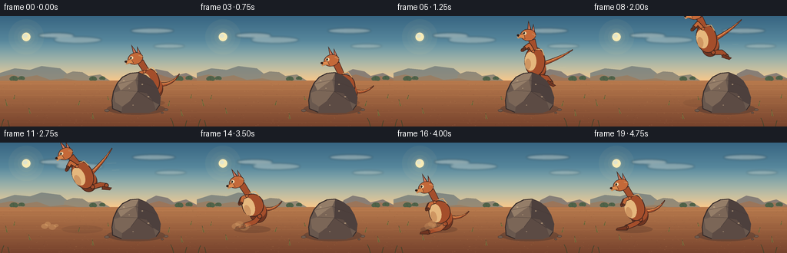
视觉工具实际返回图片 2
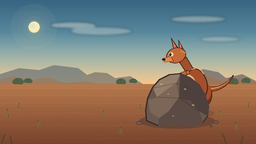
视觉工具实际返回图片 3
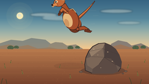
视觉工具实际返回图片 4
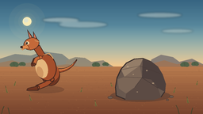
视觉工具实际返回图片 5
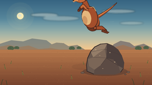
视觉工具实际返回图片 6
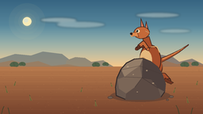
视觉工具实际返回图片 7

视觉工具实际返回图片 8
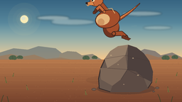
视觉工具实际返回图片 9
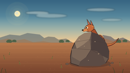
视觉工具实际返回图片 10
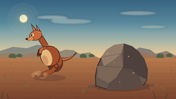
视觉工具实际返回图片 11
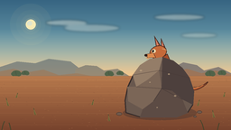
视觉工具实际返回图片 12

视觉工具实际返回图片 13
视觉工具实际返回图片 14
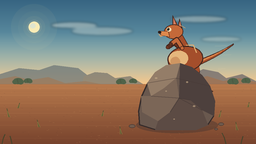
视觉工具实际返回图片 15
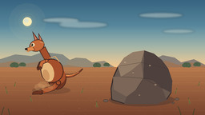
视觉工具实际返回图片 16
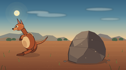
视觉工具实际返回图片 17
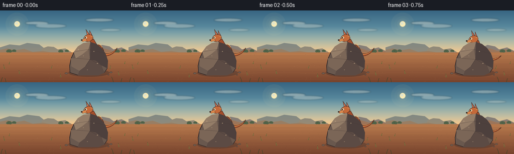
保存候选 3 份；完成命令 17 次；可验证图片返回 17 张。原始 API 响应与完整日志保留在本地。